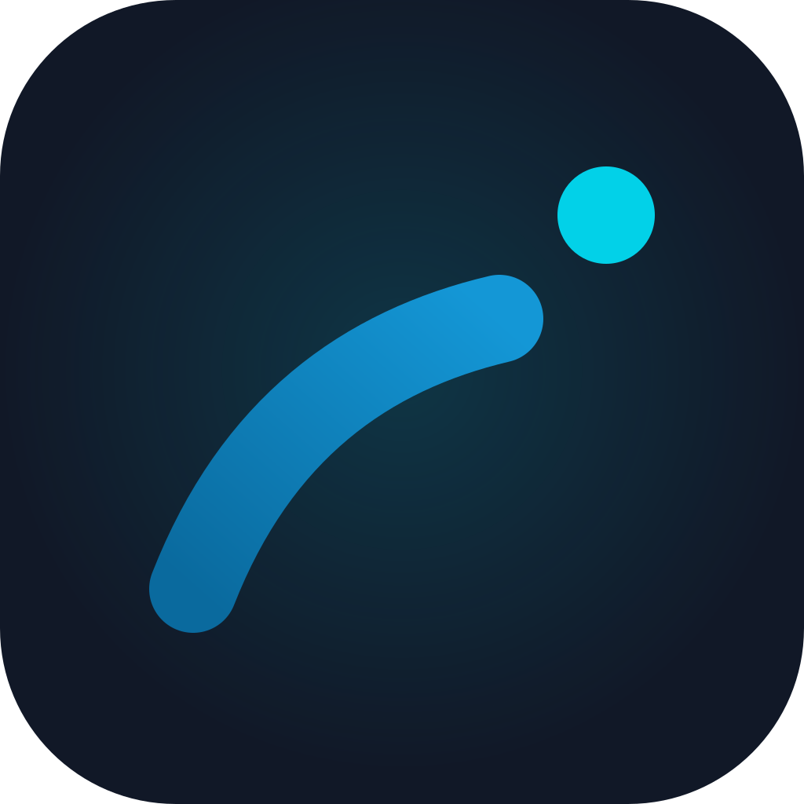
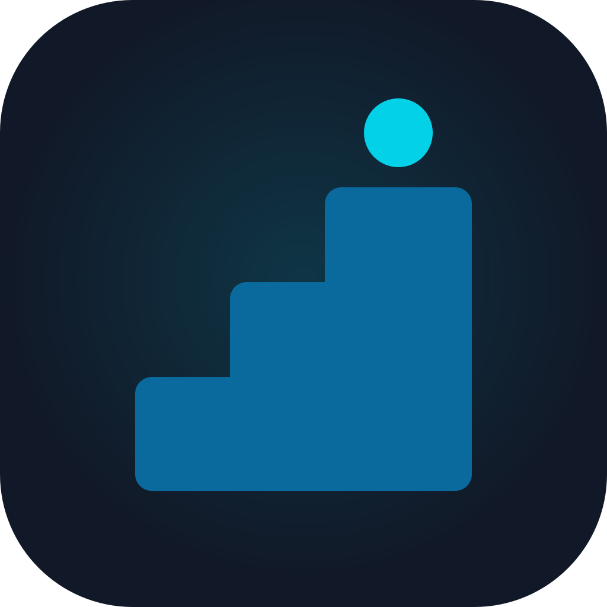
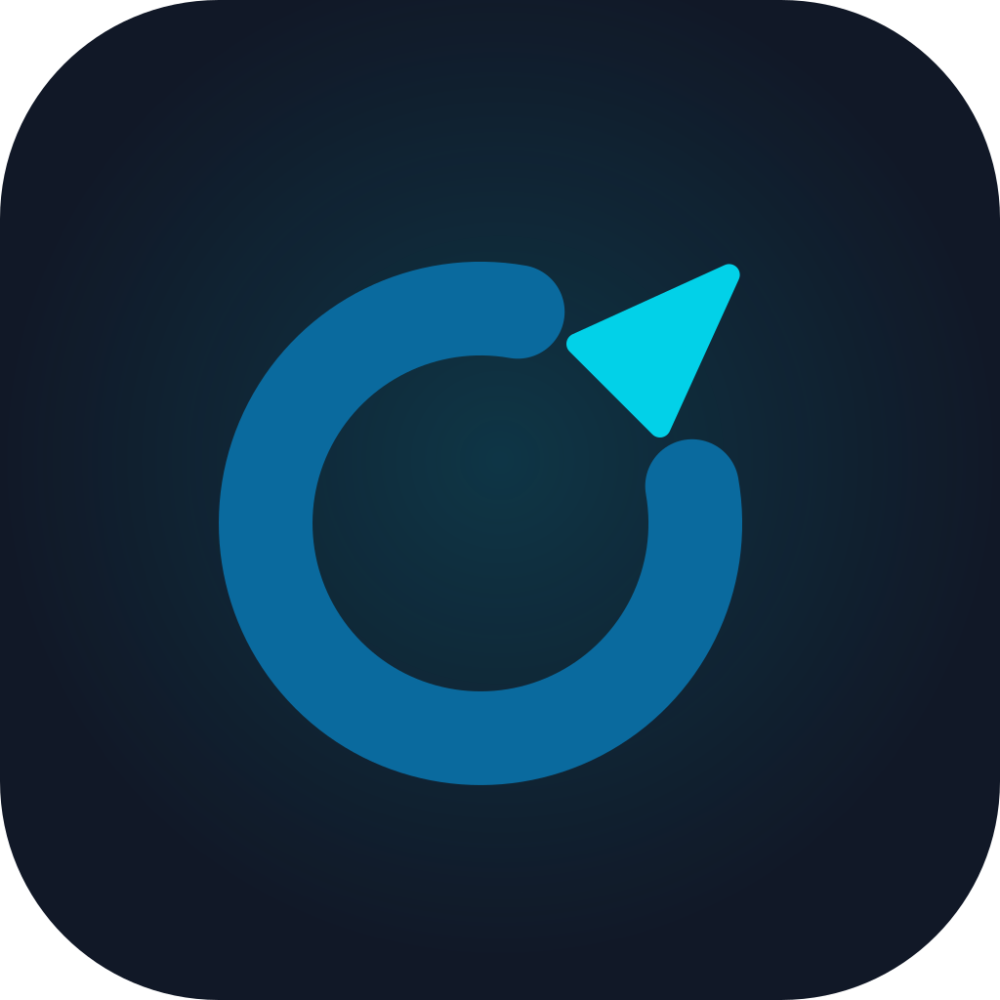

Trois pistes aux couleurs Ekim : bleu nuit, bleu acier, cyan. Chaque icône est vue en grand, à la taille d’un écran d’accueil (56 px), en favicon (24 px), sur fond clair et en gris.

Le mouvement qui fait avancer : une trajectoire qui monte, lancée par un point. Court, français, chaleureux pour toute la famille.

On progresse marche après marche : argent, corps, habitudes. Le point cyan, c’est toi, arrivé un cran plus haut.

Garder le cap : chacun fixe sa direction, l’application l’y ramène. Le C s’ouvre et la pointe en sort, vers le haut et l’avant.
Autres noms possibles, sans logo pour l’instant : Pas à pas, Lancée, Boussole, Cime, Ekim Famille.